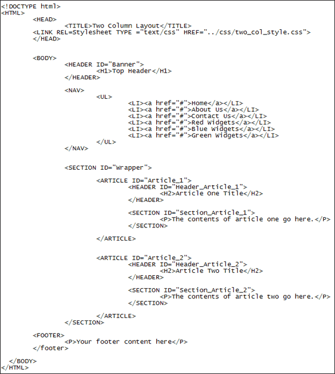
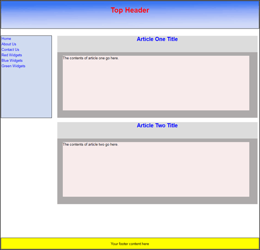

A Two Column Layout Using HTML5 and CSS
<< Continued from previous section
For the two-column layout, there is a HTML page and a CSS script already created for you. The HTML page is in the extra_files/layouts folder that came with this course, and the CSS script is in the extra_files/css folder (two_col_style.css).
(If you haven't got the extra files yet, the download location is here, under the heading Web Design - New Course : Download the Extra Files needed for this course (You don't need the downloads for the old course.)
Open up the HTML page first and take a look at the code. The page is called layout_two_col.html, and the code looks like this:

The code is identical to the one column layout! (Well, accept for a second article added.)
When the page is viewed in a browser, it looks like this:

The first column holds the navigation bar. But it doesn't have to. You can still have a navigation bar at the top. The first column can then hold anything you like: special offers, news, previous blog entries, etc.
The second column is for the main contents of the page. Here, we have two articles. Again, the background colours are just so that you can see each section.
Open up the two_col_style CSS file and take a look at the code. Compare it to the one column layout. Again, there's not that much difference.
The part that moves the navigation bar to the first column is the float: left in the NAV class, and the display: block in the NAV list class. You then play around with the widths and height to get the look you want.
Exercise
Play around with the various CSS values and see what happens when you reload
the page. For this exercise, it's better to copy our file into your own HTML
folders, that way you'll leave the original untouched.
Exercise
Research navigation bars on the internet. You can start with this page:
http://www.maxdesign.com.au/articles/css-layouts/
It is a bit old, now, but still gives you a good idea of what CSS layouts are all about.
In the next section, you'll learn how to create a table using HTML and CSS.